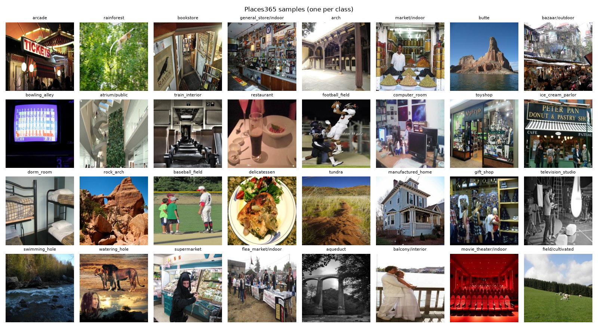
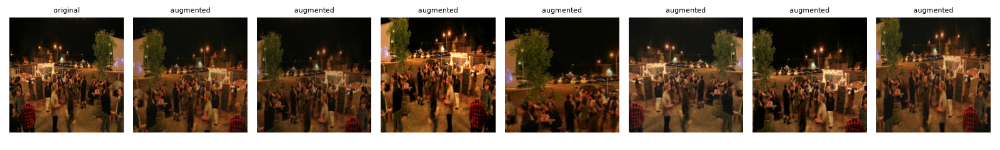
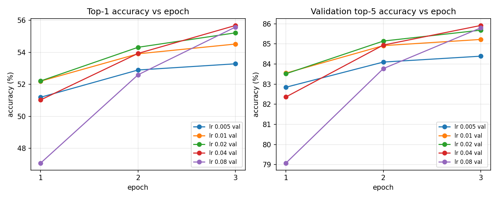
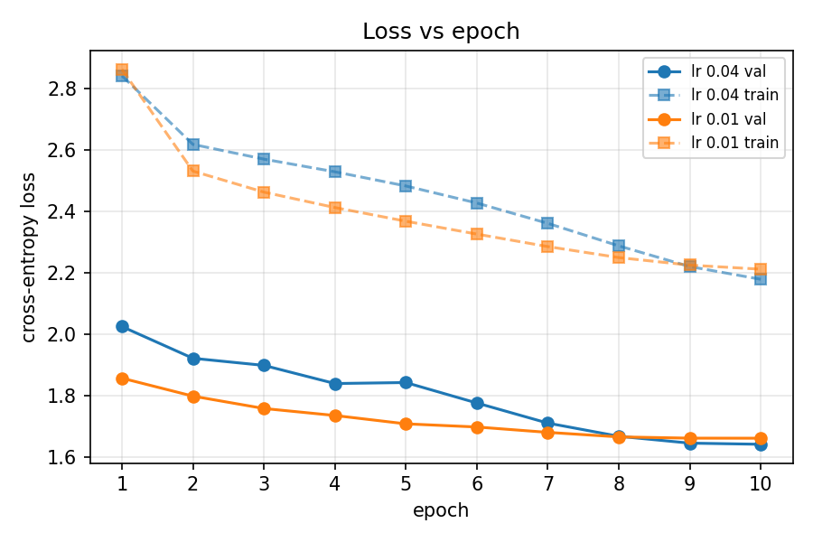
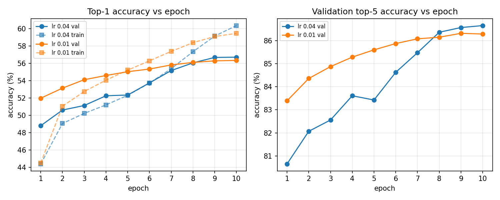
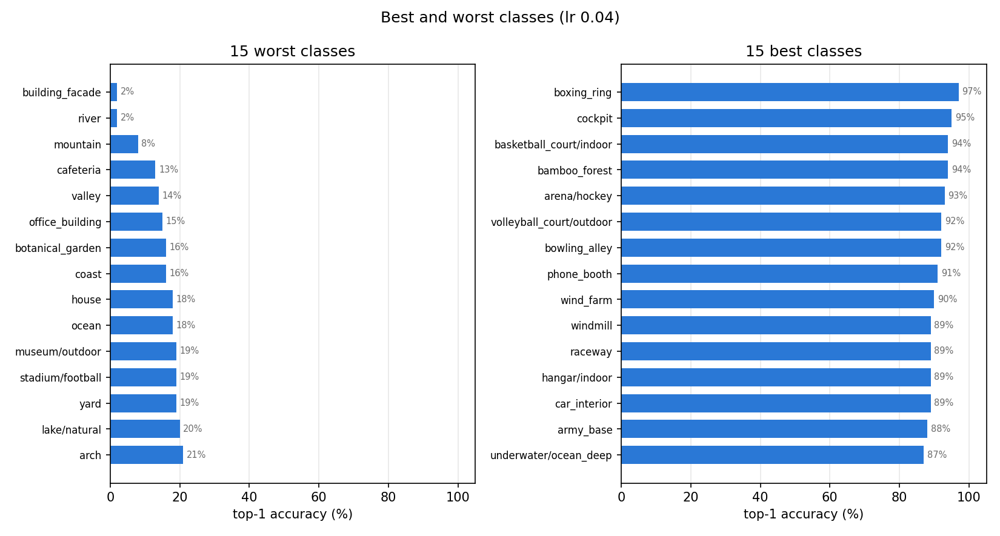
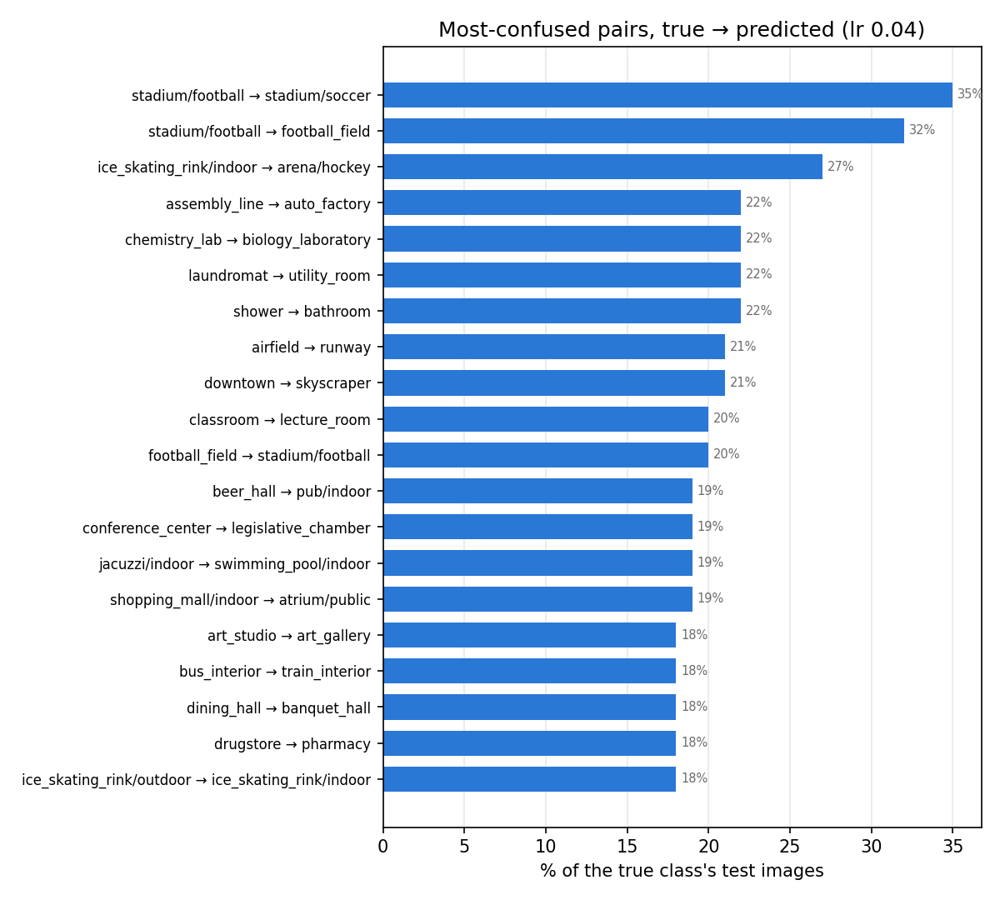
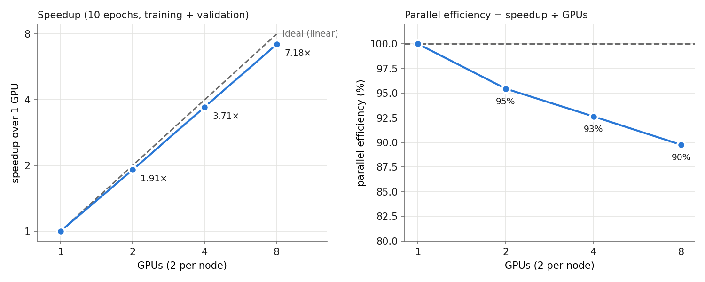
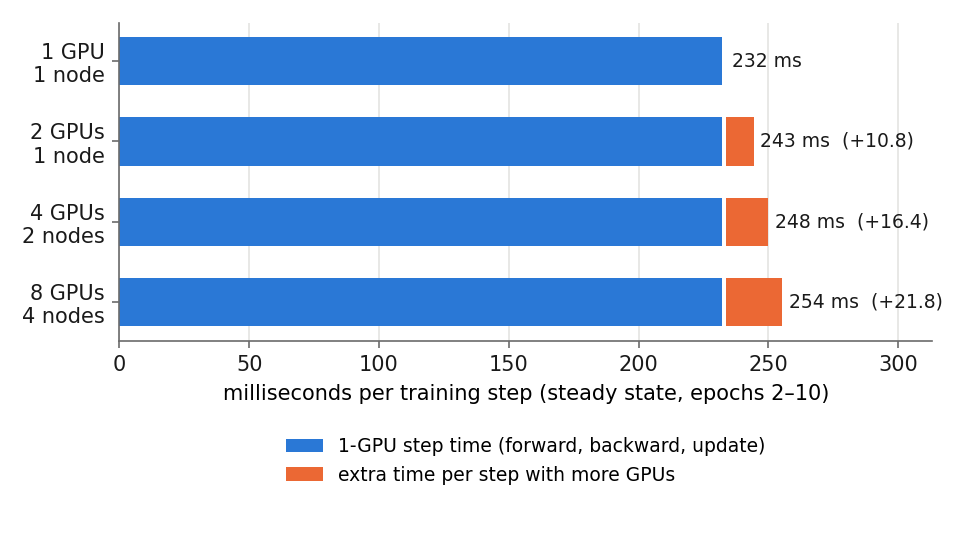

ResNet-50 on 1.8M images, trained on 1 to 8 GPUs on USC CARC
| Part | Tasks | Presenter |
|---|---|---|
| Problem, dataset, preprocessing | 1–2 | Naaz |
| Model and single-GPU training | 3–4 | Halas |
| Training curves and test-set evaluation | 5–6 | Ashley |
| Distributed training and scaling | 7–8 | Chris |
The label depends on the whole image: layout, surfaces, lighting, which objects appear together



| LR | Val top-1 | Val top-5 | Time |
|---|---|---|---|
| 0.01 | 56.32% | 86.28% | 4 h 31 m |
| 0.04 | 56.70% | 86.65% | 5 h 10 m |
Training recipe in one line (warmup + cosine, label smoothing, mixed precision)


36,500 images never used for training or model selection
How this compares to the published ResNet-50 on Places365, and to our validation number (56.70%)



| GPUs | Nodes | Total | Speedup | Eff. | Top-1 |
|---|---|---|---|---|---|
| 1 | 1 | 265 m | 1.00× | 100% | 56.70% |
| 2 | 1 | 139 m | 1.91× | 96% | 56.81% |
| 4 | 2 | 72 m | 3.71× | 93% | 56.73% |
| 8 | 4 | 37 m | 7.18× | 90% | 56.75% |

PyTorch Profiler / nvidia-smi results, optimizations tried, before vs after